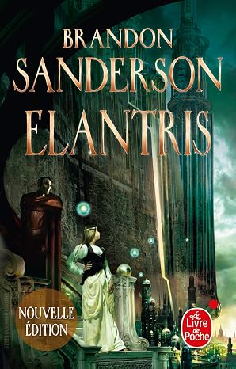

Elantris
Roman indépendant VF : 2017, trad. Pierre-Paul Durastanti VO : Mai 2005, Tor
Le premier roman de Brandon Sanderson, qui met en scène la fascinante cité d'Elantris. Une parution qui fait partie de notre offre de Noël. Une nouvelle édition augmentée avec des rabats aux gardes illustrées, de nouvelles cartes, une préface inédite de Dan Wells ainsi qu'une fin alternative. Un auteur traduit dans 30 pays et avec 5 millions d'ex. vendus à travers le monde, et dont toutes les séries sont optionnées au cinéma. Les très bonnes ventes de l'auteur au Livre de Poche, et sa renommée internationale.